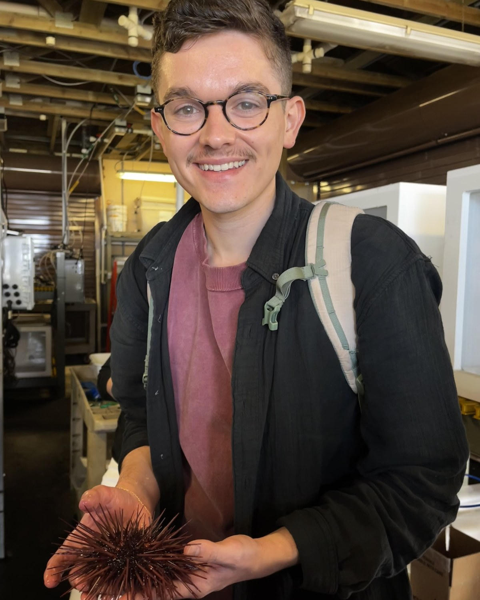

I am a PhD candidate at George Washington University, where I study the immune system in non-mammalian species. My research focuses on how the immune system evolved outside of mammals and the unique mechanisms that arise under distinct evolutionary pressures. Specifically, I study mast cells in Xenopus laevis, learning how these cells, responsible for allergies in humans, function and aid the immune response.
I studied Biology and Environmental Sciences at the University of Virginia, where I used molecular biology to study the impact of marine heatwaves on seagrass seed germination. My interests in marine systems led me to Dr. Courtney Smith's lab, where I studied the immune system of the purple sea urchin Strongylocentrotus purpuratus. I now study the immune system and innate immune cells in the African clawed frog Xenopus laevis in Dr. Leon Grayfer's lab.
Outside the lab, I enjoy knitting, ceramics, as well as cooking and baking.
Ph.D., Biological Sciences, George Washington University, expected 2028
B.A., Biology and Environmental Sciences, University of Virginia, 2021